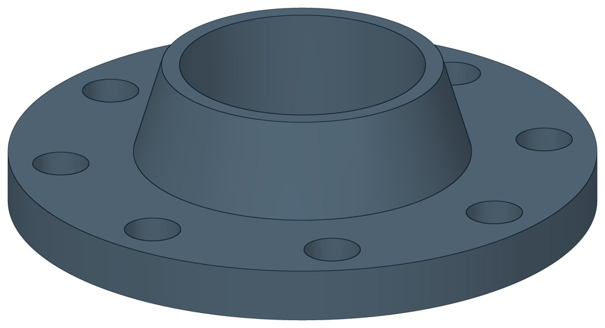

Фланец стальной воротниковый
Фланец с конической шейкой: приваривается к трубе встык.

- Диаметр трубы Dн
- 18–1220 мм
- Документ
- ГОСТ 12821-80 (заменён ГОСТ 33259-2015)
- Исполнений
- 48
- Масса
- 0,79–690,59 кг
- Цена в магазине
- 141,9–56 791,9 ₽
- 3D-модели
- у всех исполнений
Применение и монтаж
Назначение: где применяется
Разъёмное соединение на давление 25 и 40 кгс/см². Размеры зависят от Ду и Ру — на каждое давление своя строка. В магазине цена указана на карточку целиком: давление уточняйте при заказе.
Отличия от соседних типов
На давление 10, 16 и 25 кгс/см² — Фланцы плоские.
D — наружный диаметр фланца, D1 — диаметр окружности болтовых отверстий, b — толщина диска вместе с выступом, H — полная высота с шейкой, n × d — число и диаметр отверстий. Размеры ГОСТ 12821-80 совпадают с действующим ГОСТ 33259-2015.
Таблица исполнений
| Обозначение | Код ПРОМБУРГ | Думм | Рукгс/см² | Dмм | D1мм | bмм | Hмм | Отв. n × d | Болты | Цена₽ | Массакг | Артикул | Магазин | 3D |
|---|---|---|---|---|---|---|---|---|---|---|---|---|---|---|
| Ду 15 Ру 25 | ПБ-ФВ-0015-1 | 15 | 25 | 95 | 65 | 16 | 35 | 4 × 14 | М12 | 141,9 | 0,79 | TEN1810 | Купить | 3D |
| Ду 15 Ру 40 | ПБ-ФВ-0015-2 | 15 | 40 | 95 | 65 | 16 | 35 | 4 × 14 | М12 | 141,9 | 0,79 | TEN1810 | Купить | 3D |
| Ду 20 Ру 25 | ПБ-ФВ-0020-1 | 20 | 25 | 105 | 75 | 16 | 36 | 4 × 14 | М12 | 174,9 | 0,97 | TEN1811 | Купить | 3D |
| Ду 20 Ру 40 | ПБ-ФВ-0020-2 | 20 | 40 | 105 | 75 | 16 | 36 | 4 × 14 | М12 | 174,9 | 0,97 | TEN1811 | Купить | 3D |
| Ду 25 Ру 25 | ПБ-ФВ-0025-1 | 25 | 25 | 115 | 85 | 16 | 38 | 4 × 14 | М12 | 212,3 | 1,18 | TEN1812 | Купить | 3D |
| Ду 25 Ру 40 | ПБ-ФВ-0025-2 | 25 | 40 | 115 | 85 | 16 | 38 | 4 × 14 | М12 | 212,3 | 1,18 | TEN1812 | Купить | 3D |
| Ду 32 Ру 25 | ПБ-ФВ-0032-1 | 32 | 25 | 135 | 100 | 18 | 45 | 4 × 18 | М16 | 330 | 1,83 | TEN1813 | Купить | 3D |
| Ду 32 Ру 40 | ПБ-ФВ-0032-2 | 32 | 40 | 135 | 100 | 18 | 45 | 4 × 18 | М16 | 330 | 1,83 | TEN1813 | Купить | 3D |
| Ду 40 Ру 25 | ПБ-ФВ-0040-1 | 40 | 25 | 145 | 110 | 19 | 48 | 4 × 18 | М16 | 394,9 | 2,19 | TEN1814 | Купить | 3D |
| Ду 40 Ру 40 | ПБ-ФВ-0040-2 | 40 | 40 | 145 | 110 | 19 | 48 | 4 × 18 | М16 | 394,9 | 2,19 | TEN1814 | Купить | 3D |
| Ду 50 Ру 25 | ПБ-ФВ-0050-1 | 50 | 25 | 160 | 125 | 20 | 48 | 4 × 18 | М16 | 390,5 | 2,78 | TEN1815 | Купить | 3D |
| Ду 50 Ру 40 | ПБ-ФВ-0050-2 | 50 | 40 | 160 | 125 | 20 | 48 | 4 × 18 | М16 | 390,5 | 2,81 | TEN1815 | Купить | 3D |
| Ду 65 Ру 25 | ПБ-ФВ-0065-1 | 65 | 25 | 180 | 145 | 22 | 53 | 8 × 18 | М16 | 520,3 | 3,71 | TEN1816 | Купить | 3D |
| Ду 65 Ру 40 | ПБ-ФВ-0065-2 | 65 | 40 | 180 | 145 | 22 | 53 | 8 × 18 | М16 | 520,3 | 3,71 | TEN1816 | Купить | 3D |
| Ду 80 Ру 25 | ПБ-ФВ-0080-1 | 80 | 25 | 195 | 160 | 22 | 55 | 8 × 18 | М16 | 623,7 | 4,44 | TEN1817 | Купить | 3D |
| Ду 80 Ру 40 | ПБ-ФВ-0080-2 | 80 | 40 | 195 | 160 | 24 | 58 | 8 × 18 | М16 | 623,7 | 4,8 | TEN1817 | Купить | 3D |
| Ду 100 Ру 25 | ПБ-ФВ-0100-1 | 100 | 25 | 230 | 190 | 24 | 61 | 8 × 22 | М20 | 914,1 | 6,51 | TEN1818 | Купить | 3D |
| Ду 100 Ру 40 | ПБ-ФВ-0100-2 | 100 | 40 | 230 | 190 | 26 | 68 | 8 × 22 | М20 | 914,1 | 7,4 | TEN1818 | Купить | 3D |
| Ду 125 Ру 25 | ПБ-ФВ-0125-1 | 125 | 25 | 270 | 220 | 26 | 68 | 8 × 26 | М24 | 1 321,1 | 9,41 | TEN1819 | Купить | 3D |
| Ду 125 Ру 40 | ПБ-ФВ-0125-2 | 125 | 40 | 270 | 220 | 28 | 68 | 8 × 26 | М24 | 1 321,1 | 10 | TEN1819 | Купить | 3D |
| Ду 150 Ру 25 | ПБ-ФВ-0150-1 | 150 | 25 | 300 | 250 | 28 | 71 | 8 × 26 | М24 | 2 020,7 | 12,52 | TEN1820 | Купить | 3D |
| Ду 150 Ру 40 | ПБ-ФВ-0150-2 | 150 | 40 | 300 | 250 | 30 | 71 | 8 × 26 | М24 | 2 020,7 | 13,03 | TEN1820 | Купить | 3D |
| Ду 200 Ру 25 | ПБ-ФВ-0200-1 | 200 | 25 | 360 | 310 | 30 | 78 | 12 × 26 | М24 | 2 447,5 | 17,44 | TEN1821 | Купить | 3D |
| Ду 200 Ру 40 | ПБ-ФВ-0200-2 | 200 | 40 | 375 | 320 | 38 | 88 | 12 × 30 | М27 | 2 447,5 | 24,44 | TEN1821 | Купить | 3D |
| Ду 250 Ру 25 | ПБ-ФВ-0250-1 | 250 | 25 | 425 | 370 | 32 | 78 | 12 × 30 | М27 | 4 030,4 | 24,4 | TEN1822 | Купить | 3D |
| Ду 250 Ру 40 | ПБ-ФВ-0250-2 | 250 | 40 | 445 | 385 | 42 | 101 | 12 × 33 | М30 | 4 030,4 | 37,59 | TEN1822 | Купить | 3D |
| Ду 300 Ру 25 | ПБ-ФВ-0300-1 | 300 | 25 | 485 | 430 | 36 | 84 | 16 × 30 | М27 | 4 672,8 | 33,29 | TEN1823 | Купить | 3D |
| Ду 300 Ру 40 | ПБ-ФВ-0300-2 | 300 | 40 | 510 | 450 | 46 | 116 | 16 × 33 | М30 | 4 672,8 | 57,1 | TEN1823 | Купить | 3D |
| Ду 350 Ру 25 | ПБ-ФВ-0350-1 | 350 | 25 | 550 | 490 | 40 | 89 | 16 × 33 | М30 | 4 923,6 | 46,57 | TEN1824 | Купить | 3D |
| Ду 350 Ру 40 | ПБ-ФВ-0350-2 | 350 | 40 | 570 | 510 | 52 | 120 | 16 × 33 | М30 | 4 923,6 | 70,34 | TEN1824 | Купить | 3D |
| Ду 400 Ру 25 | ПБ-ФВ-0400-1 | 400 | 25 | 610 | 550 | 44 | 104 | 16 × 33 | М30 | 6 607,7 | 64,81 | TEN1825 | Купить | 3D |
| Ду 400 Ру 40 | ПБ-ФВ-0400-2 | 400 | 40 | 655 | 585 | 58 | 139 | 16 × 39 | М36 | 6 607,7 | 106,76 | TEN1825 | Купить | 3D |
| Ду 450 Ру 25 | ПБ-ФВ-0450-1 | 450 | 25 | 660 | 600 | 46 | 104 | 20 × 33 | М30 | 10 906,5 | 72,26 | TEN1826 | Купить | 3D |
| Ду 450 Ру 40 | ПБ-ФВ-0450-2 | 450 | 40 | 680 | 610 | 60 | 139 | 20 × 39 | М36 | 10 906,5 | 107 | TEN1826 | Купить | 3D |
| Ду 500 Ру 25 | ПБ-ФВ-0500-1 | 500 | 25 | 730 | 660 | 48 | 104 | 20 × 39 | М36 | 13 663,1 | 88,91 | TEN1827 | Купить | 3D |
| Ду 500 Ру 40 | ПБ-ФВ-0500-2 | 500 | 40 | 755 | 670 | 62 | 144 | 20 × 45 | М42 | 13 663,1 | 132,33 | TEN1827 | Купить | 3D |
| Ду 600 Ру 25 | ПБ-ФВ-0600-1 | 600 | 25 | 840 | 770 | 54 | 120 | 20 × 39 | М36 | 15 259,2 | 123,7 | TEN1828 | Купить | 3D |
| Ду 600 Ру 40 | ПБ-ФВ-0600-2 | 600 | 40 | 890 | 795 | 63 | 145 | 20 × 52 | М48 | 15 259,2 | 180,95 | TEN1828 | Купить | 3D |
| Ду 700 Ру 25 | ПБ-ФВ-0700-1 | 700 | 25 | 960 | 875 | 58 | 130 | 24 × 45 | М42 | 25 528,8 | 166,81 | TEN1829 | Купить | 3D |
| Ду 700 Ру 40 | ПБ-ФВ-0700-2 | 700 | 40 | 995 | 900 | 68 | 165 | 24 × 52 | М48 | 25 528,8 | 228,25 | TEN1829 | Купить | 3D |
| Ду 800 Ру 25 | ПБ-ФВ-0800-1 | 800 | 25 | 1075 | 990 | 60 | 140 | 24 × 45 | М42 | 26 519,9 | 213,9 | TEN1830 | Купить | 3D |
| Ду 800 Ру 40 | ПБ-ФВ-0800-2 | 800 | 40 | 1135 | 1030 | 76 | 195 | 24 × 56 | М52 | 26 519,9 | 343,69 | TEN1830 | Купить | 3D |
| Ду 900 Ру 25 | ПБ-ФВ-0900-1 | 900 | 25 | 1185 | 1090 | 62 | 150 | 28 × 52 | М48 | 32 447,8 | 252,91 | TEN1831 | Купить | 3D |
| Ду 900 Ру 40 | ПБ-ФВ-0900-2 | 900 | 40 | 1250 | 1140 | 79 | 220 | 28 × 56 | М52 | 32 447,8 | 436,54 | TEN1831 | Купить | 3D |
| Ду 1000 Ру 25 | ПБ-ФВ-1000-1 | 1000 | 25 | 1315 | 1210 | 64 | 155 | 28 × 56 | М52 | 37 117,3 | 312,12 | TEN1832 | Купить | 3D |
| Ду 1000 Ру 40 | ПБ-ФВ-1000-2 | 1000 | 40 | 1360 | 1250 | 82 | 240 | 28 × 56 | М52 | 37 117,3 | 540,75 | TEN1832 | Купить | 3D |
| Ду 1200 Ру 25 | ПБ-ФВ-1200-1 | 1200 | 25 | 1525 | 1420 | 67 | 165 | 32 × 56 | М52 | 56 791,9 | 387,5 | TEN1833 | Купить | 3D |
| Ду 1200 Ру 40 | ПБ-ФВ-1200-2 | 1200 | 40 | 1575 | 1460 | 85 | 255 | 32 × 62 | М56 | 56 791,9 | 690,59 | TEN1833 | Купить | 3D |
Цена — из магазина promburg.ru на дату редакции каталога 11.10.2026, ₽ за штуку; актуальную цену и наличие уточняйте при заказе.
Чтобы заказать, сообщите обозначение и код ПРОМБУРГ: +7 (499) 325-51-35, promburg@yandex.ru.
Нормативные документы
- ГОСТ 12821-80 Фланцы стальные приварные встык на Ру от 0,1 до 20 МПа (от 1 до 200 кгс/см кв.). Конструкция и размеры — документ, по которому изготавливается изделие — Не действует с 01.04.2017. Заменён: ГОСТ 33259-2015. Изделие изготавливается по прежнему обозначению.
- ГОСТ 33259-2015 Фланцы арматуры, соединительных частей и трубопроводов на номинальное давление до PN 250. Конструкция, размеры и общие технические требования
На трубу Dн 18–1220 мм в каталоге
Позиции каталога с исполнениями на те же наружные диаметры трубы.
Опоры и подвески
- Опоры приварные неподвижные скользящие ОПН общих Dн: 23
- Опора неподвижная двухупорная ТС-660 общих Dн: 21
- Опорные плиты диэлектрические ТС-632 общих Dн: 20
- Опоры неподвижные ППУ-ОЦ (ПЭ) ППУ неподвижная общих Dн: 19
- Опоры скользящие ППУ-ПЭ(ОЦ) ППУ скользящая общих Dн: 19
- Опоры бескорпусные неподвижные ОБН общих Dн: 19
- Опоры сварные скользящие неподвижные и направляющие СТО 79814898-130 общих Dн: 18
- Опора приварная скользящая и неподвижная ОСТ 34-10-616-93 общих Dн: 18
- Опоры хомутовые скользящие ОСТ 34-10-617-93 общих Dн: 18
- Опоры хомутовые неподвижные ОСТ 34-10-618-93 общих Dн: 18
- Опоры скользящие неподвижные ОСТ 34-10-623-93 общих Dн: 18
- Блок подвески с опорной балкой ОСТ 34-10-726-93 общих Dн: 18
- Хомутовые опоры СК 2109-92 общих Dн: 17
- Опоры хомутовые и скользящие неподвижные и направляющие СТО 79814898-131 общих Dн: 17
И ещё 97 типов — в оглавлении каталога.
Компенсаторы
- Компенсатор сильфонный КСО общих Dн: 19
- Компенсатор сильфонный КСОФ общих Dн: 19
- Компенсатор сильфонный 2СКУ.ППМ (ИЯНШ) 2СКУППМИ общих Dн: 18
- Компенсатор сильфонный стартовый СК общих Dн: 18
- Компенсатор сильфонный СКУ.ППМ (ИЯНШ) СКУППМИ общих Dн: 18
- Компенсатор сильфонный 2ОПКР общих Dн: 17
- Компенсатор сильфонный 2ОПКР (ИЯНШ) 2ОПКРИ общих Dн: 17
- Компенсатор сильфонный 2СКУ.М 2СКУМ общих Dн: 17
- Компенсатор сильфонный 2СКУ.М (ИЯНШ) 2СКУМИ общих Dн: 17
- Компенсатор сильфонный 2СКУ.ППУ (ИЯНШ) 2СКУППУИ общих Dн: 17
- Компенсатор сильфонный 2СКУ.ППУ/ОЦ (ИЯНШ) 2СКУППУОЦИ общих Dн: 17
- Компенсатор сильфонный КС общих Dн: 17
- Компенсатор сильфонный КСО (ИЯНШ) КСОИ общих Dн: 17
- Компенсатор сильфонный ОПКР общих Dн: 17
И ещё 21 тип — в оглавлении каталога.
Другие детали
- Фланец стальной плоский приварной общих Dн: 28
- Отвод стальной крутоизогнутый 90° общих Dн: 22
- Заглушка стальная эллиптическая общих Dн: 16
- Отвод стальной крутоизогнутый 90°, 09Г2С общих Dн: 15
- Переход стальной концентрический общих Dн: 13
- Днище стальное эллиптическое общих Dн: 8
- Отвод нержавеющий 90° общих Dн: 1
Другие типы раздела
Детали трубопроводов (отводы, переходы, фланцы, заглушки, днища, тройники)
- Днище стальное эллиптическое
- Заглушка стальная эллиптическая
- Отвод стальной крутоизогнутый 90°, 09Г2С
- Отвод нержавеющий 90°
- Отвод стальной крутоизогнутый 90°
- Переход стальной концентрический
- Тройник стальной равнопроходный
- Фланец стальной плоский приварной
- Фланцы прочие
Частые вопросы
Что указать в заявке, чтобы получить цену без уточнений?
Обозначение с номером исполнения или код ПБ, количество, Dн и стенку трубы, расчётную температуру наружного воздуха, покрытие, город доставки и желаемый срок. Кнопка «В заявку» в таблице собирает спецификацию, которую можно выгрузить в Excel или отправить письмом.
Чем плоский фланец отличается от воротникового?
Плоский надевают на трубу и приваривают; в каталоге он на Ру 10, 16 и 25 кгс/см². Воротниковый имеет коническую шейку и приваривается к трубе встык; в каталоге он на Ру 25 и 40 кгс/см².
ГОСТ 12820-80 и ГОСТ 12821-80 отменены. По какому стандарту фланцы?
Оба стандарта не действуют с 01.04.2017 и заменены ГОСТ 33259-2015: плоский приварной фланец — это тип 01, воротниковый — тип 11. Наружный диаметр, диаметр окружности болтов, число и диаметр отверстий в таблицах каталога сверены с ГОСТ 33259-2015 и совпадают.
Что указать при заказе фланца?
Условный проход Ду и давление Ру: на каждое давление своя строка размеров. Для плоских фланцев Ду 100, 125 и 150 — ещё наружный диаметр трубы: стандарт даёт несколько вариантов отверстия. Например, Ду 150 — под трубу 152, 159 или 168 мм; в таблице каталога приведён вариант под 152 мм.
У фланца Ду 80 четыре отверстия или восемь?
Для Ду 80 на Ру 10 и 16 стандарт допускает оба варианта: 4 отверстия по предпочтительному ряду и 8 по другому. В таблице каталога — 4 отверстия диаметром 18 мм; на Ру 25 — 8. Перед заказом сверьте число отверстий с ответным фланцем.
Детали подбирают по Ду или по наружному диаметру?
Приварные детали — отводы, переходы, тройники, заглушки, днища — по наружному диаметру и толщине стенки трубы, запись вида 219×6. Фланцы — по условному проходу Ду и давлению Ру.